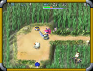
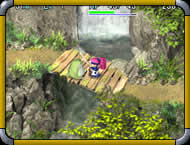

「风来西林外传～女剑士飞鸟见参～」预定今年圣诞前登陆PC！
����这个PC版是以2002年2月27日在DC发卖的「风来西林外传～女剑士飞鸟见参～」为蓝本制作的，CHUNSOFT强调这并非只是一个单纯的移植版本，而是大幅增加了很多新要素的强化版，就算玩过DC版的玩家也可以体会到全新的乐趣，增加的新要素和新系统偶会详细地向大家介绍的。
����PC版吸引人眼球的是有着比DC版更为华丽的游戏画面和更为完善的游戏系统，可选择窗口或者全屏显示，对应DirectX 8.1（Internet版也仅是对应DirectX 2.1而已），借助PC的网络便利性风来救助队系统更可发挥得淋漓尽致，可以说这绝对是拥有PC的风来fans必玩的大作！
游戏名称
不思�hのダンジョン �L来のシレン外�弧概���士アスカ��参！」for Windows
发售日
2002年12月20日发售预定
售价
未定
开发厂商
CHUNSOFT独自开发
配置要求
OS：Windows XP/Me/2000/98
CPU：PentiumIII 600MHz以上 内存：128MB以上
显卡/声卡：带16M以上显存且支持DirectX8.1以上的显卡；AC'97以上声卡，暂时未知能否支持EAX
硬盘空间：需要1.5G以上
载体：CD-ROM×1


这就是PC版开发中的游戏画面了，可以看出比DC版要华丽得多！
〖游戏简介〗
[登场人物]
[故事背景]
[游戏系统]
[壁纸下载]
[返回首页]